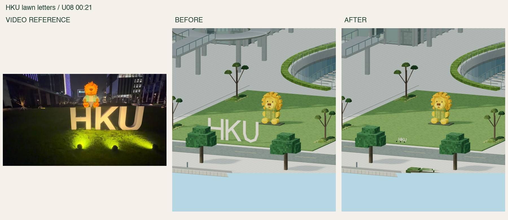
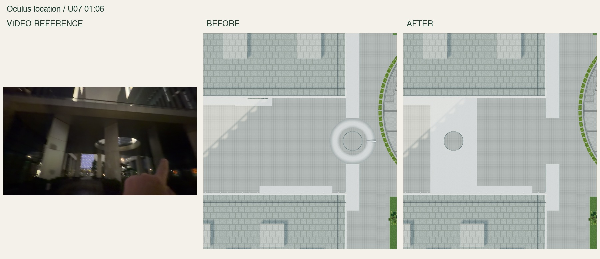
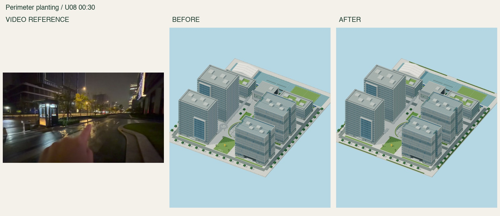
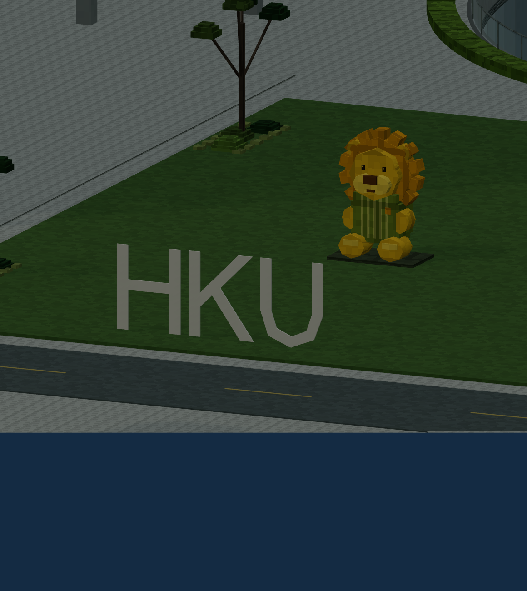
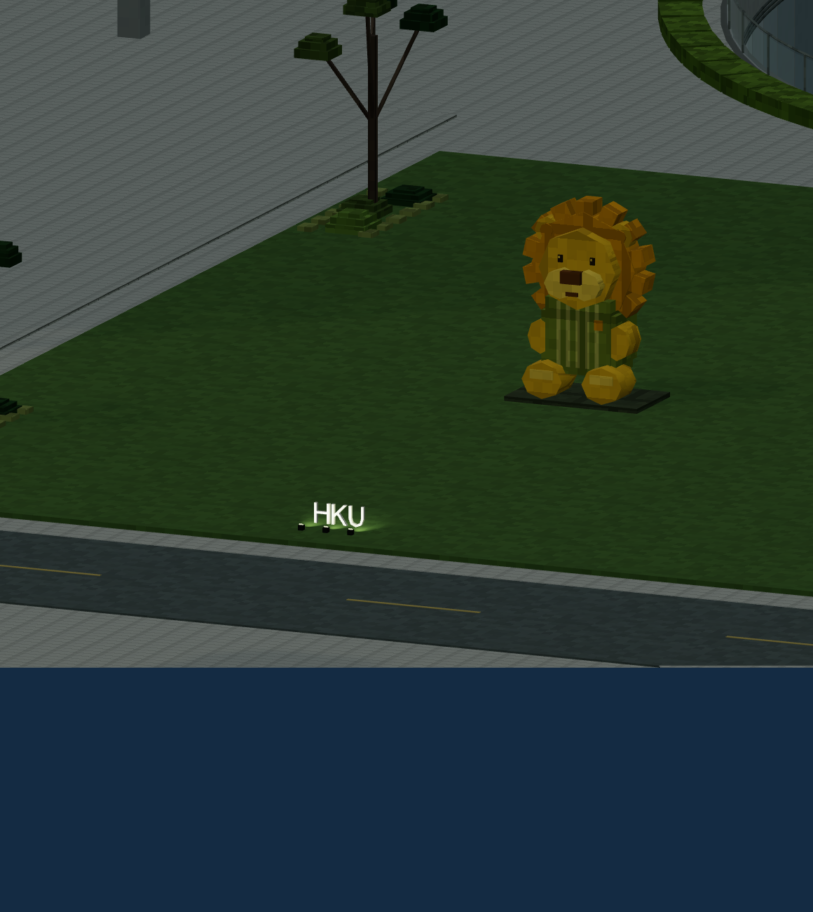

2026-11-15 · 基线 947eb6c。模型前后采用相同相机位置、目标和视野；左侧实录是不同透视，只用于核对特征，不能用并排像素宽度估算实际尺寸。





三个地灯配合缩小后的字母；照度与色温为表现参数。建筑灯带白天切回中性灯槽、夜间恢复发光。
完整回归、场景索引、GLB 导出与 17 个 GLB 校验通过。旧 17,606 个场景 ID 与作者键全部保留。三段原声可播放、可按时间戳跳转、不会同时叠播；主 AAC 音轨抽取前后比特流一致。
回归日志 · 模型校验 · 编号与尺寸 · 浏览器音频检查 · 原声校验
本轮检查了实际浏览器静态渲染、昼夜切换和自动碰撞回归；未重新执行完整徒步路线或逐字人工试听。台阶前平道长度仍待准确对应，详见修改说明。